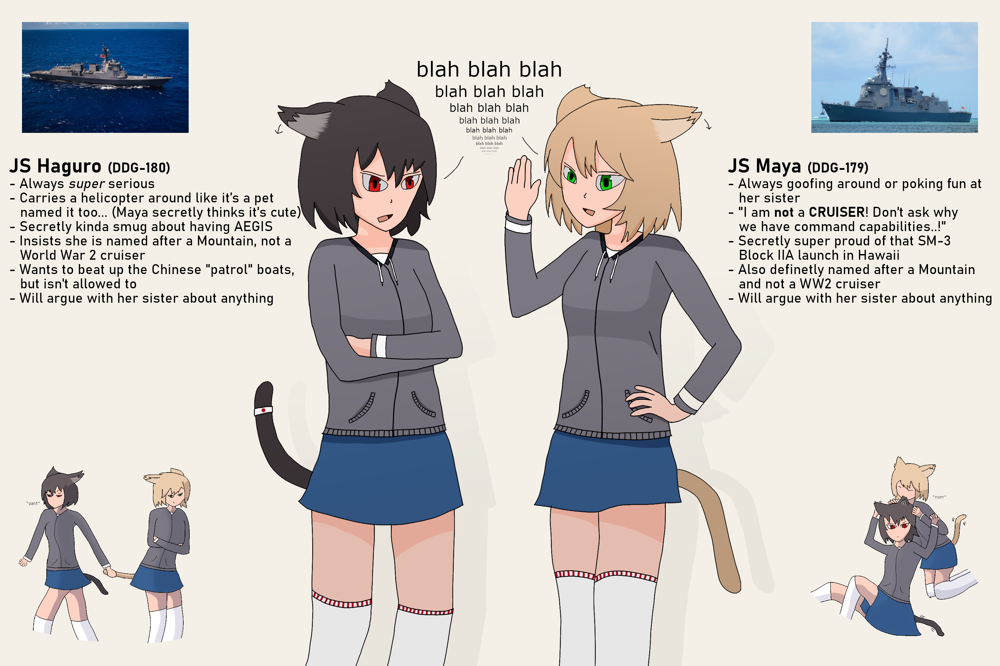
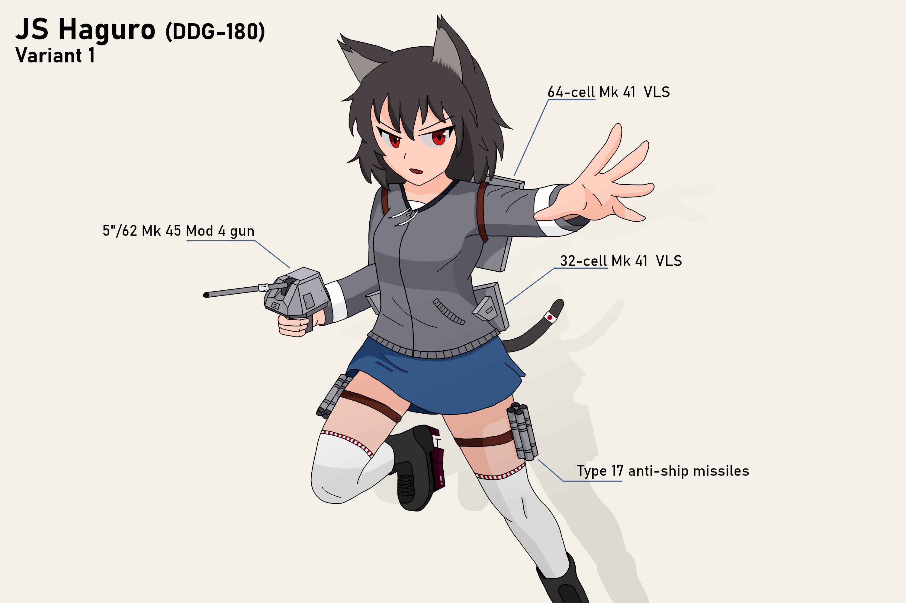
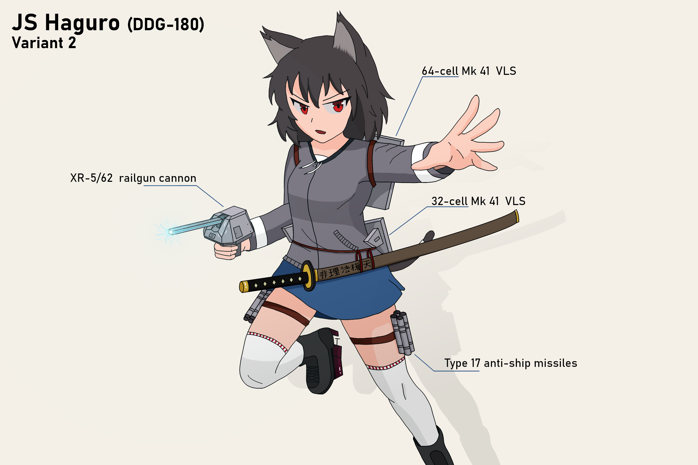

Haguro
Haguro (はぐろ) is an Ajisain shipgirl and a major assisting character in the story of Keen Sword. She is often shown together with her sister Maya. Haguro has crimson red eyes, dark hair and a catears. Her tail is the same color as her hair, somewhat stubby and usually pretty uncombed.
She, similar to her sister, wears a grey long-sleeve zip-up jacket with white cuffs and darker grey accents at the hem, together with a simple blue miniskirt and white thigh-high socks with red lace garters. Around her tail she has a white band.
She is very nationalistic and particularly hostile towards Chugonia and epically toward Lhasa. However, she is also playful, as can be seen by her pet helicopter, and while trying to act serious most of the time, it is rather easy to see that she is not like that naturally.
| Country | Ajisai |
|---|---|
| Height | 172cm | 5'8" |
| Birthday | 19 March |
| Type | Destroyer |
In Game
Not Done
Relationships
Maya
Maya is Haguro's sister. They argue about nearly everything, even when they agree, just to keep it going. Still, they always help each other when needed.
Lhasa-kuso
Haguro and Lhasa openly hate each other with both of them constantly trying to annoy and one-up the other. This started as both are nationalistic and had several clashes in the past. As a result, she calls her Lhasa-kuso
Trivia
- Her real life counterpart is the Japanese Maya-Class Guided Missile Destroyer JS Haguro (DDG-180)open_in_new.
- The katana in her advanced rigging reads 非理法権天 meaning "Unreason loses to Reason; Reason loses to Law; Law loses to Power; Power loses to Heaven."
Gallery
Main Artwork
-

Reveal Image
-

Haguro's Base Rigging
-

Haguro's Advanced Rigging